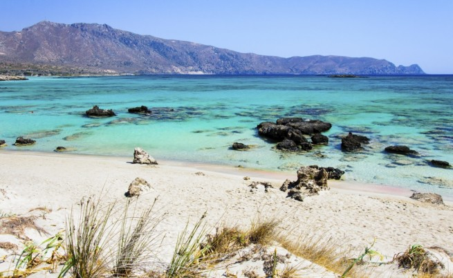

Топ 10 на най-добрите плажове в Гърция
Лято е ...
Бъдещи програмисти, стига кодене!
Хайде на море!
Повечето хора обичат да четат за пътешествия до най-различни точки на света. Рядко обаче дестинациите, които публикациите ни представят, са достъпни – те са прекалено далечни, твърде екзотични и... изискват доста средства.
Ето защо днес ще ви представим една доста по-достъпна за българите дестинация – Гърция.
Сайтът "Трипадвайзър" представя 10-те най-добри плажа в нашата южна съседка.
1. Елафониси, Гърция
Хич и не е случайно, че този гръцки плаж попада в топ 6 на най-добрите плажове в Европа за 2014.
Елафониси се намира на югозападното крайбрежие на Крит - пети по големина остров в Средиземно море. Пясъчната ивица е изключително светла и с розов нюанс, а водите са прозрачни. Заради климата плажът е една от перфектните дестинации по всяко време на годината.
Източник: "Трипадвайзър"